Machine Learning Engineer & Data Scientist
Building high-performance AI and neuromorphic systems at the TU/e Supercomputing Center (Spike AI), scalable production data pipelines at Vencomatic Group, and automated computer vision solutions as Co-Founder of Loopit.ai. MSc Computer Science @ TU Eindhoven.
Turning complex data and supercomputing research into intelligent systems that drive real business impact
I am a Machine Learning Engineer and Data Scientist with an MSc in Computer Science & Engineering from Eindhoven University of Technology (TU/e). My expertise spans production-ready AI systems, reinforcement learning, deep learning (YOLO, CodeT5), and high-performance computing across supercomputing, agriculture, manufacturing, and automotive sectors.
Currently at the TU/e Supercomputing Center, I contribute to Spike AI, developing high-performance Spiking Neural Network (SNN) algorithms and neuromorphic workflows on supercomputer clusters. Concurrently at Vencomatic Group, I engineer automated data pipelines and interactive Streamlit dashboards analyzing telemetry and sensor data to optimize poultry production.
As Co-Founder & CTO of Loopit.ai, I directed a 12-engineer team developing an automated vehicle damage detection platform powered by custom YOLOv8 models, earning the prestigious €1,000 EAISI AI Incentive Award.
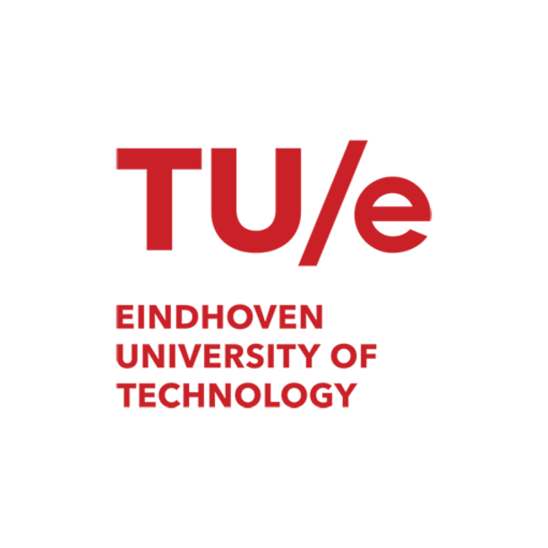
Eindhoven University of Technology (TU/e)
2023 – 2025 • GPA 7.12/10 • NetherlandsJamia Millia Islamia University
2019 – 2023 • Grade 8.54/10 • New Delhi, IndiaBuilding AI solutions across supercomputing, industry, and startups
TU/e Supercomputing Center — Spike AI
Eindhoven, NetherlandsDeveloping high-performance Spiking Neural Network (SNN) pipelines and neuromorphic computing architectures on TU/e supercomputing infrastructure for energy-efficient next-generation AI.
Vencomatic Group
Eersel, NetherlandsBuilding automated data pipelines and interactive dashboards using Python, SQL Server, and Streamlit to analyze poultry production telemetry, track KPIs, and detect sensor anomalies on Azure.
Loopit.ai
Eindhoven, NetherlandsLed end-to-end development of AI-driven platform automating vehicle damage detection and repair estimation. Managed 12-member team. Won €1,000 EAISI AI Incentive Award.
Vencomatic Group
Eersel, NetherlandsDeveloped RL-based calibration system reducing false negatives by over 50% (~€25,000 annual savings, ~15,000 eggs saved, ~1,440kg CO₂e avoided). Integrated with knowledge graphs.
William & Mary University
Williamsburg, VA, United StatesOptimized LLM prompts for code generation using CodeT5 by adapting gisting and prompt masking. Benchmarked on CodexGlue with CrystalBLEU and Pass@k.
Bergische Universität Wuppertal
Wuppertal, GermanyDeveloped and fine-tuned deep learning models utilizing reinforcement learning and job-shop scheduling principles to optimize production in the AlphaMES aerospace project.
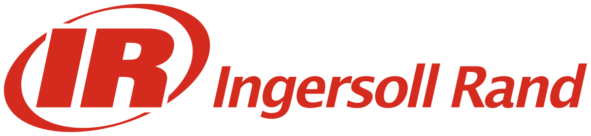
Ingersoll Rand
IndiaDeveloped Python-based dashboard with real-time telemetry data integration and modular pipelines for machine usage monitoring and automated reporting on cloud platforms.
Research and commercial machine learning systems driving measurable impact
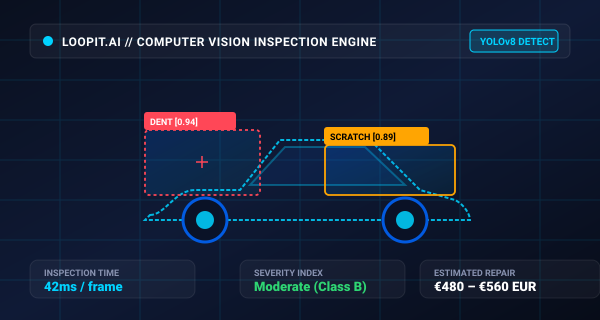
AI-driven platform automating vehicular damage detection, localization, and repair estimation for insurance companies. Won the €1,000 EAISI AI Incentive Award.
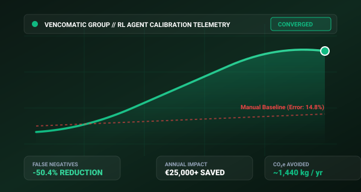
Reinforcement learning framework reducing false negatives by 50% in high-throughput automated sorting lines.
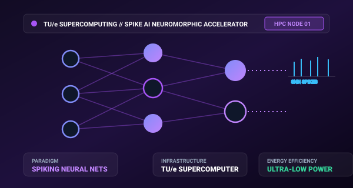
Energy-efficient Spiking Neural Network (SNN) development and deployment framework at the TU/e Supercomputing Center.
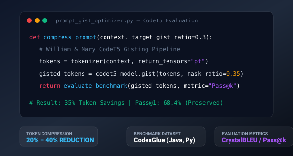
Optimized prompt gisting and attention masking for code generation models at William & Mary.
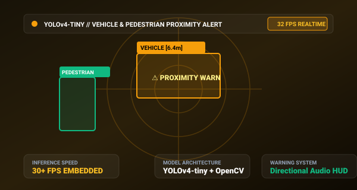
Real-time YOLOv4-tiny collision warning system detecting nearby vehicles and pedestrians with audio warnings.
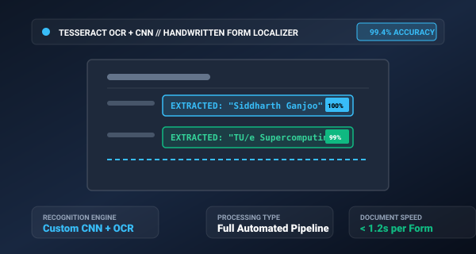
Automated document parsing pipeline extracting handwritten form fields using custom CNNs and Tesseract OCR.
Recent achievements, media highlights, and conference milestones
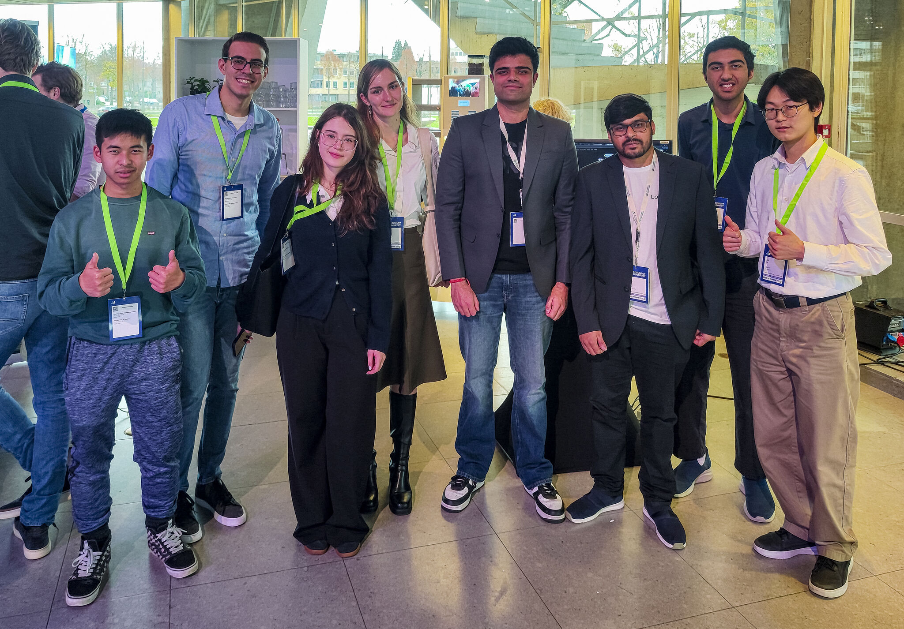
Showcased Loopit.ai's platform at the Evoluon to key stakeholders across insurance and automotive industries.
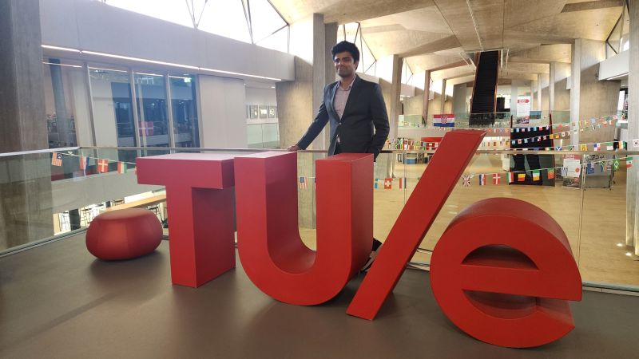
Graduated from TU/e with thesis on reinforcement learning for adaptive egg-sorting in collaboration with Vencomatic Group.
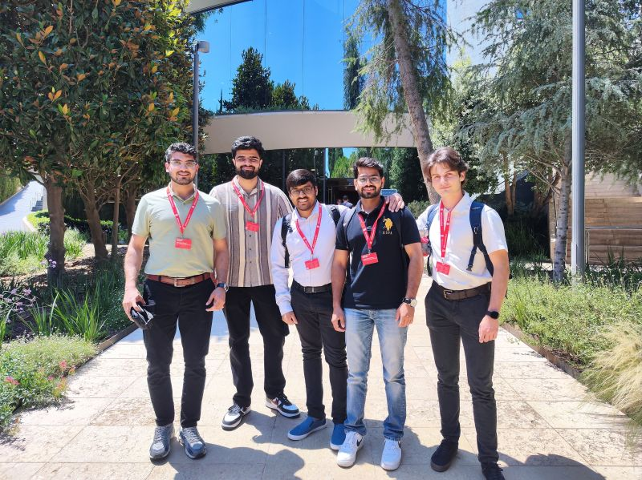
Represented TU/e in EuroTeQ cohort, accelerating Loopit.ai through mentorship and VC presentations.
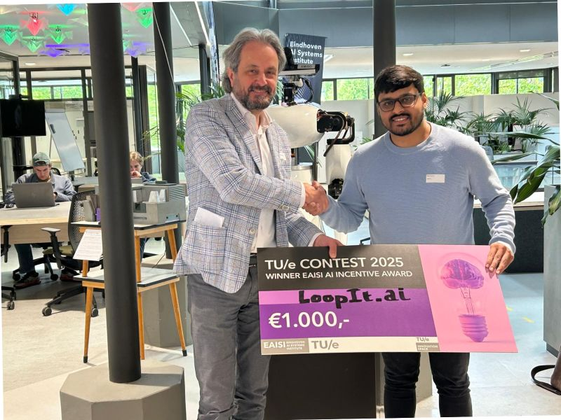
Won €1,000 for Loopit.ai's promising AI solution with clear practical applications.
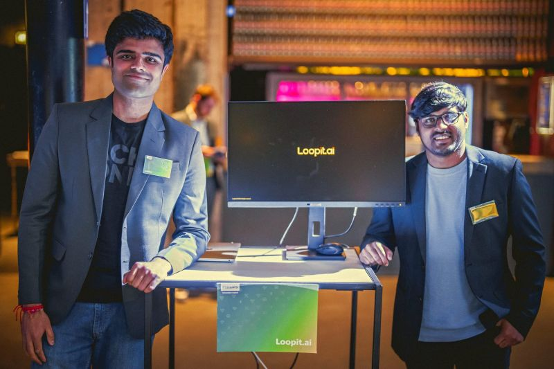
Participated in Philips innovation initiative, collaborating on cutting-edge technology challenges in the Eindhoven ecosystem.
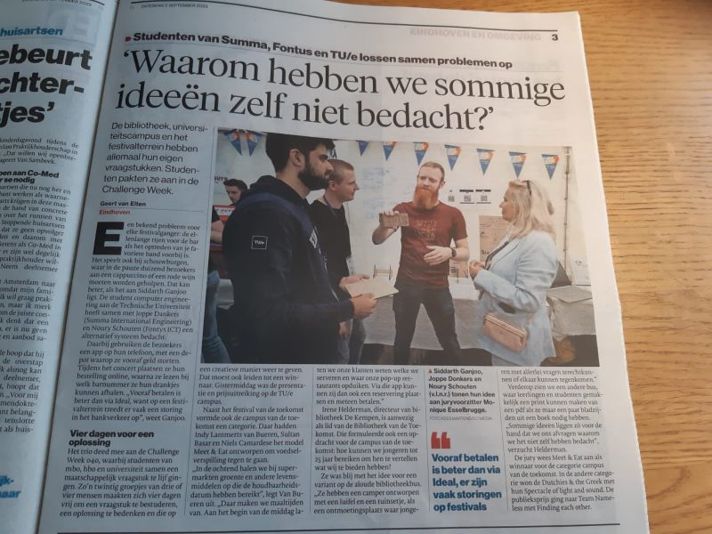
Cashless festival bar system featured in local newspaper.
Endorsements from professors and industry collaborators
"Siddharth is amazing. He's smart, humble and he gets things done."
Assistant Professor, TU/e
"Siddharth combines technical excellence with practical business acumen."
CTO, Loopit.ai
"A talented researcher with strong analytical and problem-solving skills."
Associate Professor, TU/e
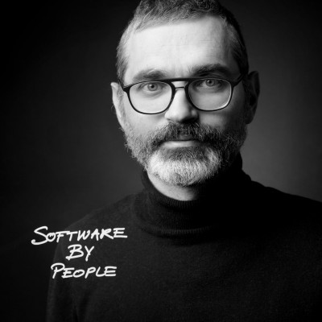
"Siddharth's dedication to quality and innovation is exceptional."
Full Professor, TU/e
Open to full-time opportunities, high-performance ML collaborations, and consulting
Eindhoven, Netherlands